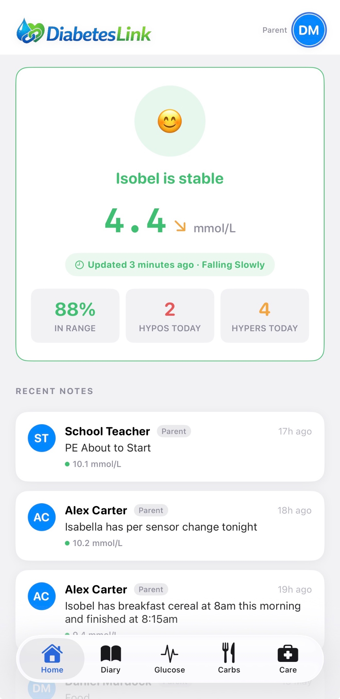
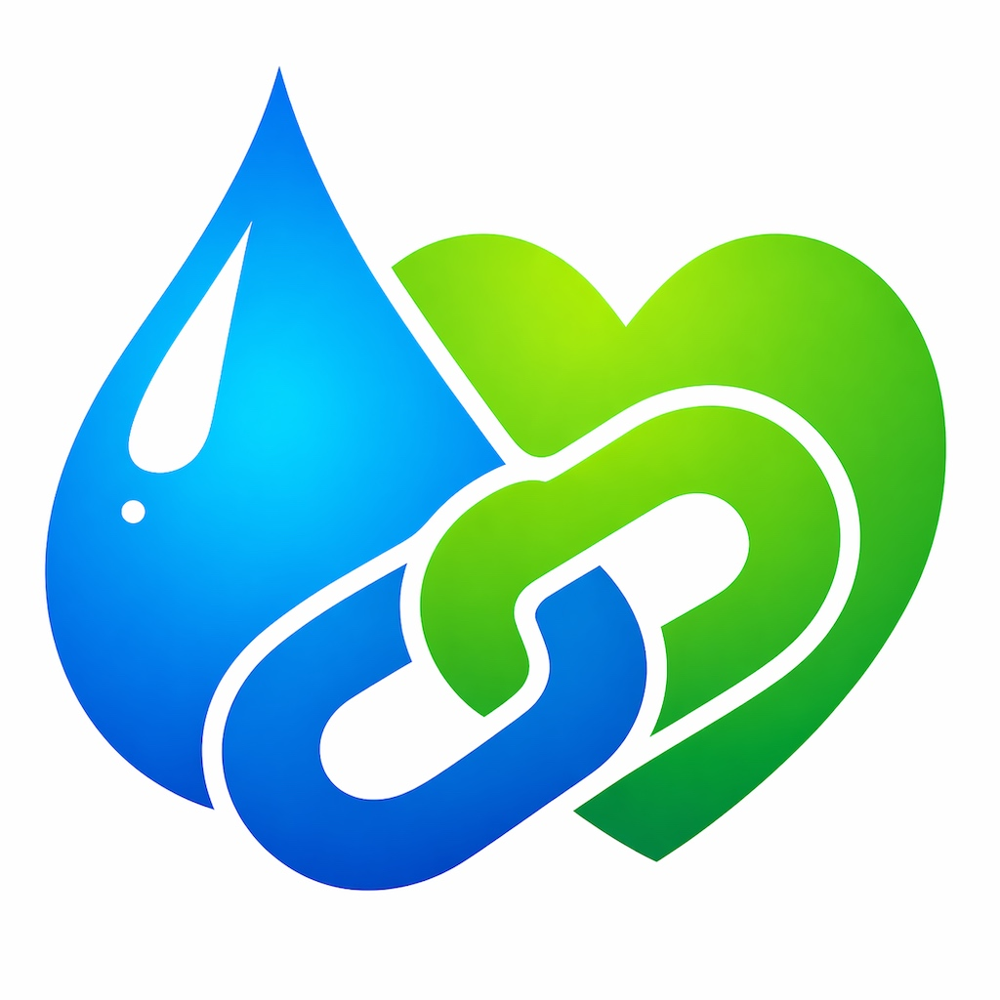

Glucose in context
See current glucose, 24-hour summary, in-range time and trend data in a way that is easy to scan quickly.
DiabetesLink is a calm, clear app for families and individuals who need glucose visibility, useful context, notes, diary events and care information without turning everything into a mess of screenshots and scattered updates.


The aim is simple: less faff, better visibility, and a clearer picture of what was happening around each reading so decisions are easier to make.
See current glucose, 24-hour summary, in-range time and trend data in a way that is easy to scan quickly.

Track events through the day with notes, episodes and timestamps so the record is useful rather than just noisy.

Use quick add, search, barcode scanning and manual entry to keep carb logging fast enough for real life.

Designed around care roles, profile settings, thresholds, alerts and connected CGM support.
The visual style is intentionally clean and light. You want fast scanning, obvious priorities and the confidence that the important information is right there without digging through different tools.

Health-related products live or die on clarity, confidence and restraint. The site should feel reassuring, practical and properly joined up with the app itself.
The site is written for real users and families, not investors. Clear wording beats medical waffle every time.
Read the official Privacy Policy for the current privacy information and app handling details.
This version is lightweight, easy to host on GitHub Pages, and easy to update as the app sharpens up.
Use the screenshots above as the current product view, then get in touch through email for updates, launch interest, or early discussion around the app.